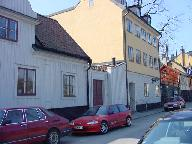
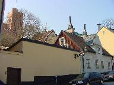

Södermalm i tid och rum
10-11. Fjällgatan 30 och 32
Ur Ett berg vid vattnet, Per Anders Fogelström, 1969
Fjällgatan 30 (liksom de övriga husen på samma tomt) torde ha tillkommit under mitten av 1700-talet. Då omnämns en tröjvävare och fabrikör A. Berg som ägare, han ägde också 32-an.
|
 
|
I början av 1800-talet är det en kollega till honom som äger husen, klädesfabrikören Johan Pousette. Det har uppgivits att det lilla lusthuset vid Stigbergsgatan skulle ha byggts av "välaktade klädefabrikören Pousette". Uppgiften förefaller tvivelaktig eftersom lusthuset kröns av en vindflöjel som bär årtalet 1776. Intill lusthuset finns en liten kryddgård, "Anna Lindhagens täppa" - något vildvuxen enligt namngivarens önskan. |
Annars är det sjökaptenerna som dominerar i nummer 30 liksom i så många andra av gatans hus. Där finns också en skeppsklarerare Frisch och en skepparänka Windelbom nämnda som ägare, båda på 1760-talet.
Hundra år senare ägdes huset mot Fjällgatan av slaktaren J. Pettersson som anhöll om att få anbringa fönster i källarvåningen mot gatan.
1875 blev handlaren C. A. Asplund ägare av huset som hans änka 1890 sålde till grosshandlaren F. W Gråberg som även övertog Asplunds firma vid Stora Nygatan, ett "engroslager av korta varor".
Den siste private ägaren blev sedan agenten E. H. W. Köppen.
En god vän till de tre konstnärerna var Oscar Andersson, OA. Enligt Gunnar Jungmarker var OA en ofta sedd gäst i ateljén vid Fjällgatan och lär ha varit den som döpte de tre vännerna där till Rimpan, Limpan och Tompan "efter då gängse modell, för vilken kolingens brylling Dompan har förblivit den mest namnkunniga representanten".
Ateljén var ända fram till senaste ombyggnaden av huset, 1963, ganska liten och låg innanför vindskontoren. Vid ombyggnaden fick vindsvåningen sina kupor mot Fjällgatan och vattnet - och det är därifrån som detta nu skrives.
I våningen under hade Anna Lindhagen en annan av sina verksamheter under 1920-talet, där låg då "Stigbergets ungdomsgård" som användes för en del möten, speciellt för flickor som slutat skolan och där mötte gamla klasskamrater och sin lärarinna.
|
 
|
Fjällgatan 32 består av två hus, ett lägre trähus mot gatan och ett något högre stenhus inne på gården. Som nämnts ägdes området av tröjvävaren Berg på 1750-talet, bland senare ägare finns kofferdiskepparen Malmgren och sjökaptenen Påhlsson samt fabrikören och stadsmajoren A. Dimander. |
Ur Guide till kulturhus på Söder..., Arne Eriksson, 1999
|

| I en av våningarna i huset Fjällgatan 30 hade Anna Lindhagen under 1920-talet en av sina verksamheter - »Stigbergets ungdomsgård«. Våningen användes för möten, särskilt för flickor som slutat skolan och här kunde möta gamla klasskamrater och lärare. Vid en ombyggnad 1964 fick Fjällgatan 30 sitt nuvarande utseende. Vindsvåningen fick då sina kupor ut mot vattnet. Det lilla lusthuset vid Stigbergsgatan bör ha uppförts av textilfabrikören jan Henrik Rutenbeck, som var ägare 1776, samma årtal som återfinns på lusthusets vindflöjel. Intill lusthuset finns en liten vildvuxen trädgård, »Anna Lindhagens täppa«, där hon odlade gammaldags prydnads- och kryddväxter. Gathuset av trä uppfördes mellan 1723 och 1730, gårdshuset av sten 1838. Här bodde år 1730 tröjvävaren Anders Berg, 31, med hustrun Anna Maria, 29, och barnen Britha Catharina och Anders 7 och 4 år. Till hushållet hörde också Bergs svärfar f.d. bokhållaren Johan Melin från Dalarö skans och hans hustru Britha. Dessutom bodde här två 16-åriga ungdomar från Hälsingland, lärgossen Anders Bengtsson och tjänsteflickan Barbro Svedman, som tjänade för mat och kläder. I husets bottenvåning hade Berg sin verkstad. Väveriverksamheten växte. År 1755 hade Berg sex lärgossar, en av dem var sonen Johan, 24. År 1760 sålde Berg sitt hus. Det bytte ägare flera gånger, en av dem var kofferdiskepparen Malmgren. År 1838 köpte järnbäraren Olof Backman fastigheten. Han lät utföra en hel del förbättringar av huset. En senare ägare var sjökaptenen Christer Påhlsson, som 1865 ansökte om att få panela om fasaderna. |